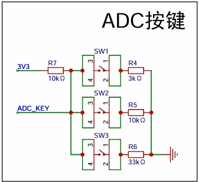

<!DOCTYPE lake>
<h2 data-lake-id="HxrAD" id="HxrAD"><span data-lake-id="u1d244883" id="u1d244883">学习目标</span></h2><ul list="u41793a98"><li data-lake-id="u682fd5a1" fid="ua6632a1f" id="u682fd5a1"><span class="lake-fontsize-12" data-lake-id="uf69a6fd8" id="uf69a6fd8" style="color: rgba(0, 0, 0, 0.9); background-color: rgb(252, 252, 252)">了解ADC按键电路的分压网络设计与阻值计算</span></li><li data-lake-id="u8d64d407" fid="ua6632a1f" id="u8d64d407"><span class="lake-fontsize-12" data-lake-id="u81c0b89a" id="u81c0b89a">掌握均值滤波算法</span></li><li data-lake-id="uc3c03f18" fid="ua6632a1f" id="uc3c03f18"><span class="lake-fontsize-12" data-lake-id="u439126a3" id="u439126a3">理解采用周期和使用周期</span></li><li data-lake-id="ud10ae588" fid="ua6632a1f" id="ud10ae588"><span class="lake-fontsize-12" data-lake-id="u7b016d51" id="u7b016d51">掌握按键驱动编写</span></li></ul><h2 data-lake-id="hQVEW" id="hQVEW"><span data-lake-id="u73577214" id="u73577214">学习内容</span></h2><h3 data-lake-id="bxwbA" id="bxwbA"><span data-lake-id="u1f6f3333" id="u1f6f3333">原理图</span></h3><p data-lake-id="u26edb036" id="u26edb036"></p><ul list="u6fbdf2f8"><li data-lake-id="u3531d5c5" fid="u24f73171" id="u3531d5c5"><span data-lake-id="u51fbb552" id="u51fbb552">单线多键分压结构， 不同按键按下电压值会不同。反之，电压不同，就知道什么按键被按下了。</span></li></ul><h3 data-lake-id="TTB1U" id="TTB1U"><span data-lake-id="ub82032bf" id="ub82032bf">ADC采样</span></h3><p data-lake-id="u09069106" id="u09069106"><span data-lake-id="ufb279eb3" id="ufb279eb3">采用DMA方式进行采样</span></p><span class="yuque-card-unsupported">[codeblock]</span><span class="yuque-card-unsupported">[codeblock]</span><span class="yuque-card-unsupported">[codeblock]</span><span class="yuque-card-unsupported">[codeblock]</span><span class="yuque-card-unsupported">[codeblock]</span><h3 data-lake-id="O3fpv" id="O3fpv"><span data-lake-id="u11cec124" id="u11cec124">按键驱动</span></h3><p data-lake-id="u4adc10b8" id="u4adc10b8"><span data-lake-id="ued4528ed" id="ued4528ed">通过ADC 采样获得值，判断值区间，确定状态。</span></p><span class="yuque-card-unsupported">[codeblock]</span><p data-lake-id="u918c2e62" id="u918c2e62"><span data-lake-id="ua79c35ce" id="ua79c35ce">不停判断状态中，可以比较本次和上一次的，发现两次中的差别就可以知道具体哪个按键是按下还是抬起</span></p><span class="yuque-card-unsupported">[codeblock]</span><p data-lake-id="u2ec523e8" id="u2ec523e8"><span data-lake-id="ud966aadc" id="ud966aadc">滤波操作</span></p><span class="yuque-card-unsupported">[codeblock]</span><h4 data-lake-id="D3hYD" id="D3hYD"><span data-lake-id="u54c074e1" id="u54c074e1">完整驱动</span></h4><span class="yuque-card-unsupported">[codeblock]</span><span class="yuque-card-unsupported">[codeblock]</span><p data-lake-id="ua0aa1169" id="ua0aa1169"><br/></p><h3 data-lake-id="Mer8i" id="Mer8i"><span data-lake-id="u3e5f544a" id="u3e5f544a">单击和长按事件</span></h3><p data-lake-id="u2b25e8c9" id="u2b25e8c9"><span data-lake-id="ua29c967e" id="ua29c967e">用户按下 时间持续了一定时长，就是长按。例如通常 设置长按时间为 1000 ms。</span></p><p data-lake-id="udc811fb1" id="udc811fb1"><span data-lake-id="uec2b4394" id="uec2b4394">如果用户按下时间没有超过，就是单击。</span></p><p data-lake-id="u0dbbb972" id="u0dbbb972"><span data-lake-id="u8da3284f" id="u8da3284f">需要考虑的问题：</span></p><ol list="u4b7caeb4"><li data-lake-id="u45b59f2c" fid="ubab13891" id="u45b59f2c"><span data-lake-id="ue0e6235d" id="ue0e6235d">长按和单击状态的区分</span></li><li data-lake-id="uc2922595" fid="ubab13891" id="uc2922595"><span data-lake-id="u6a0b8f6a" id="u6a0b8f6a">超过长按时间不松开，是否继续触发长按</span></li><li data-lake-id="ub2988e85" fid="ubab13891" id="ub2988e85"><span data-lake-id="u5b025a6c" id="u5b025a6c">抬起操作状态如何清理</span></li></ol><p data-lake-id="ud818d608" id="ud818d608"><span data-lake-id="u10b9b4e1" id="u10b9b4e1">其实考虑所有的问题，无法围绕的就是时间问题，和状态问题。</span></p><p data-lake-id="u82b44ad6" id="u82b44ad6"><span data-lake-id="u9c734d8e" id="u9c734d8e">时间问题通过 时间切片进行 计数。</span></p><p data-lake-id="uad86827f" id="uad86827f"><span data-lake-id="u5f2e839e" id="u5f2e839e">状态问题 通过增加状态去完成，1种状态不够，就多种。1个不够就多增加几个。</span></p><span class="yuque-card-unsupported">[codeblock]</span><p data-lake-id="ud4fee251" id="ud4fee251"><span data-lake-id="ud544bb2d" id="ud544bb2d">基于状态判断的逻辑</span></p><span class="yuque-card-unsupported">[codeblock]</span><h2 data-lake-id="Qsf49" id="Qsf49"><span data-lake-id="ub23d3493" id="ub23d3493">练习题</span></h2><ol list="u821703ae"><li data-lake-id="ub296bcac" fid="u1f8480fe" id="ub296bcac"><span data-lake-id="u90bbfe94" id="u90bbfe94">实现ADkey驱动</span></li></ol>